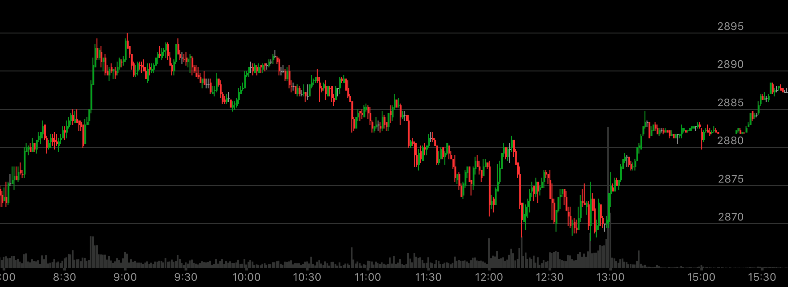

停止跨越反转走势
- 在最后的加速过程当中，它不断的跨越，每次都反弹但是都不到前面的走平点。
在某个时候，它回到原来的走平点，并且越过它。这样就反转了。
- 以下跌为例，它可以不断的下跌，然后在某个点，它反弹更高，下跌速度更快，幅度更大，创走势新低。这个点就是下跌的终点。
- 这个走势发生在一个走势的最后的过程当中，前面已经开始了一段时间了。后面开始跨越。

图示：8：30加速上涨后，它开始回调，要注意大盘没有反转，因为只有一个加速，
也没有相对弱势。所以只要把加速的走势回头就可以继续上涨。它开始缓慢下跌。到了12：00，它上涨更高，下跌更低，从12：15开始，它出现了
相对幅度弱势。说明这里是底部。然后大涨。

图示：在Tue18，它从3374开始了最后一段冲刺。这个冲刺是用不断跨越来完成的。直到它跌到了
3355，它停止跨越，它的反弹回到了前方的拉回点。这时，大盘反转了。而要注意，这个走势，前面已经下跌了。它下跌后，
拉回，震荡了很久，超过1天，然后才走出这个走势的。